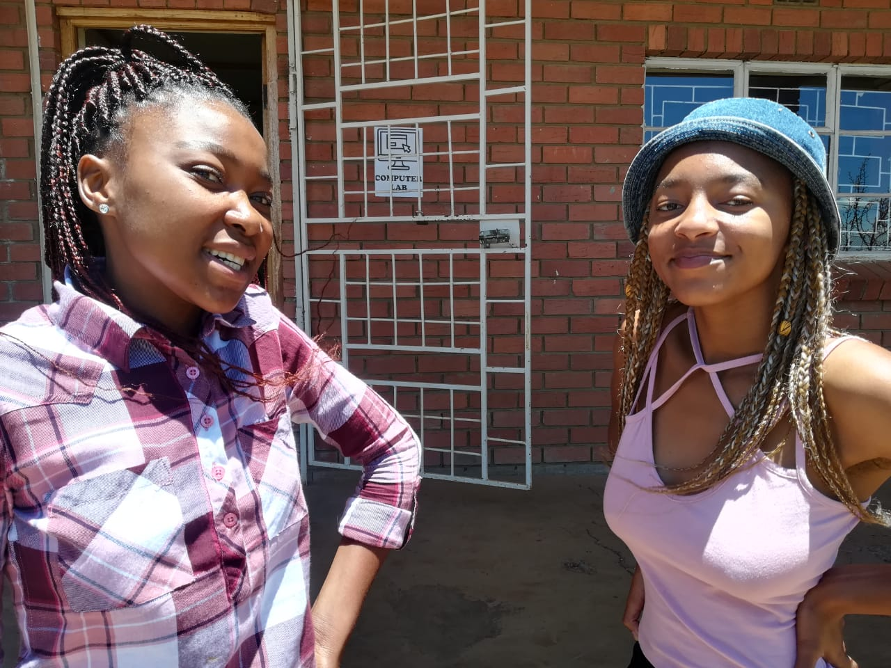
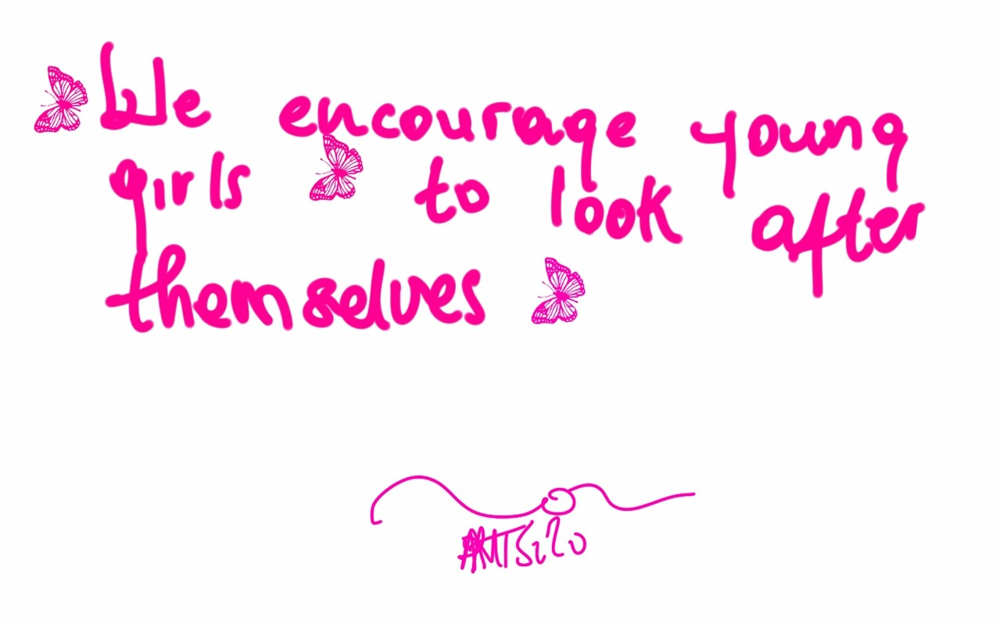
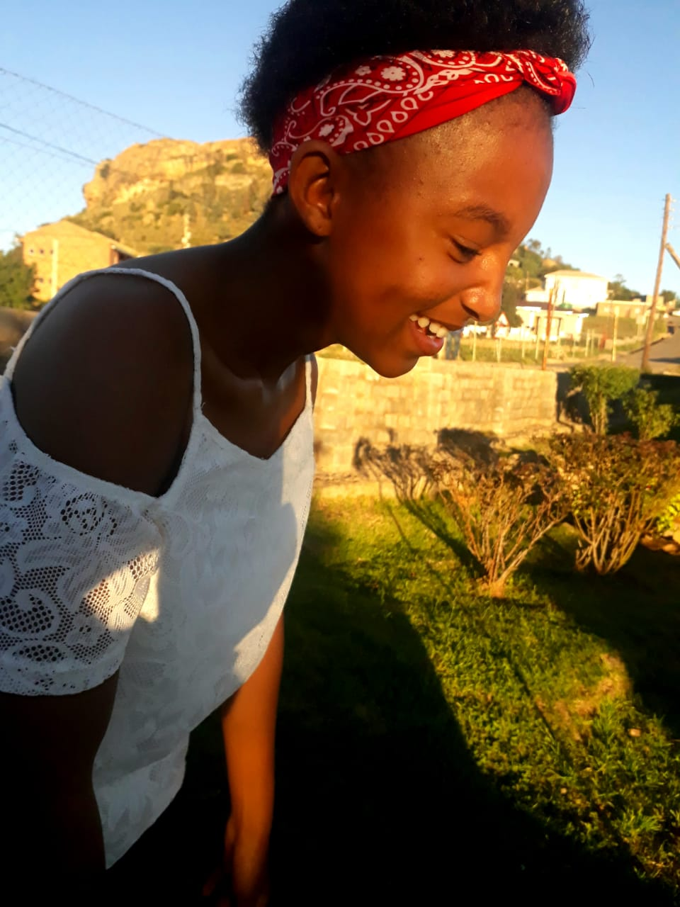

We are a group of teenage girls. We have started this website (on the 7th of January 2020). Our goal is to inform other girls on how they could take care of their bodies and stay healthy.
Our goal is to inform other girls on how they could take care of their bodies and stay healthy.
Keep positive attitude,for example, there is no reason to look at life any other way than with a glass-half-full mentality. With that being said, positive attitude; helps make sure you live your life feeling happy and stress-free. Sexual health;if a teen dtates one person for a while, she might feel pressured to become sexually intimate,in that case, friends will be curiuos and question whether she and her dating partner have "done it". This is a good time for a parent to start talking to a teen about making right decisions. Reassure her that just because she's been dating the same person for a while does not mean she has to have sex, especially if she's not ready, by then she'll make her own decison.
